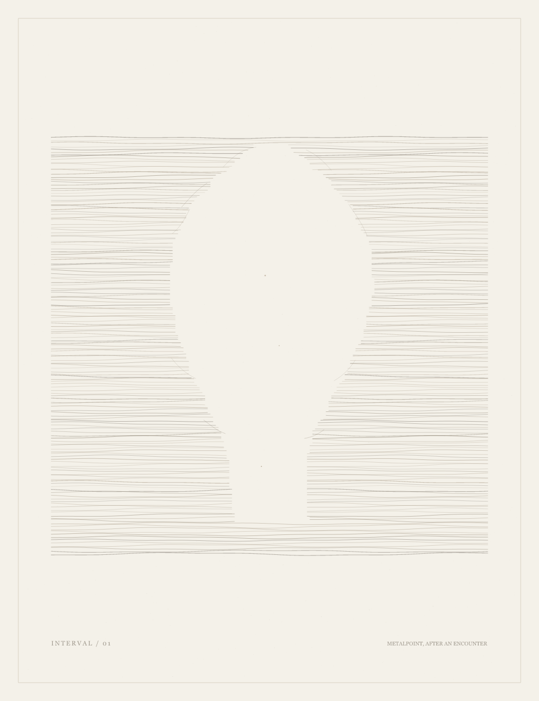
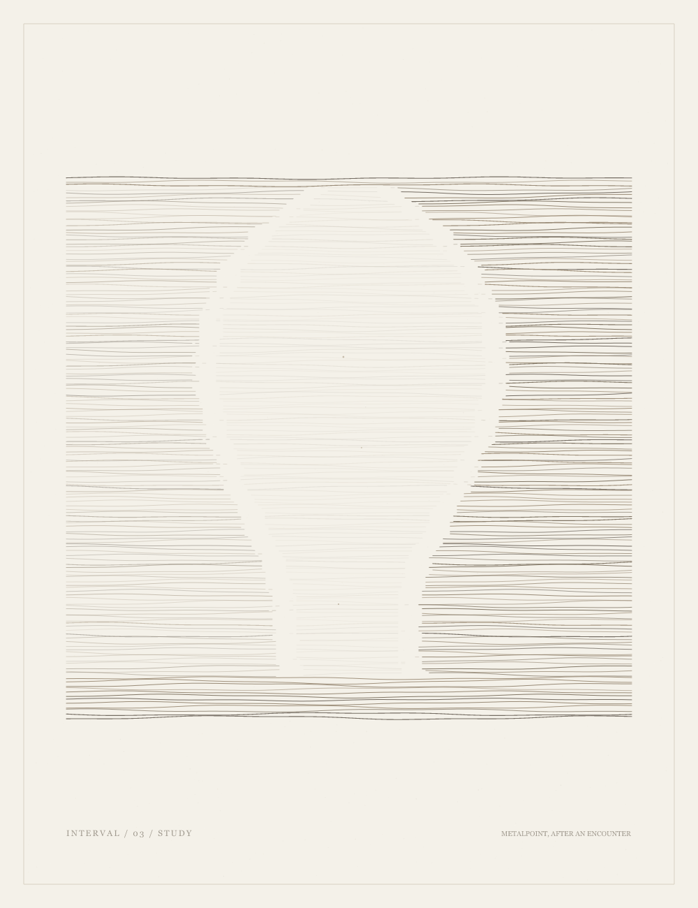
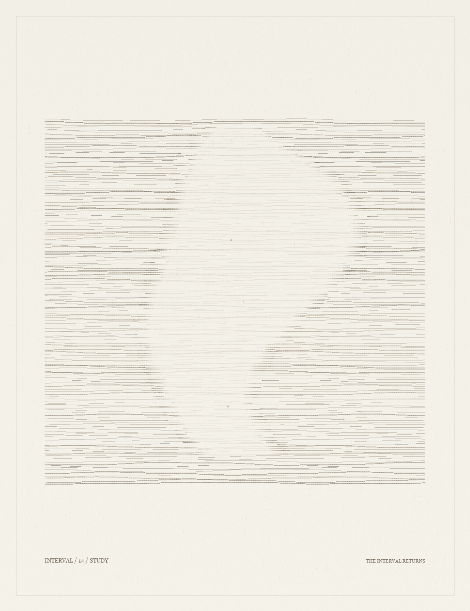
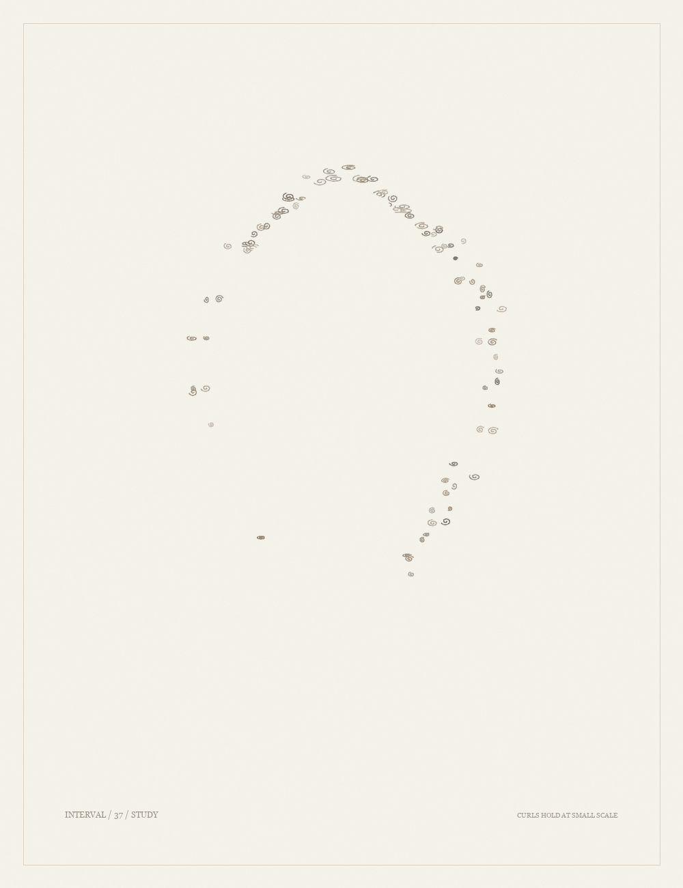

One field, two thresholds: in 01 the lines stop; in 03 they thin into the head. Both begin with the difficulty of seeing a face in a pale metalpoint drawing.

01 - The unmarked intervalThe portrait appears as a gap in the field.

03 - The softened intervalThe same field thins instead of stopping.
Made after Alphonse Legros's Head of a Man, metalpoint on white prepared paper. Met collection record.
The interval returns

14 - The interval that returns (study)The gap leaves the center and crosses it again. The head loosens into a wave.
Only the curls stay

37 - Curls clear at small scale (study)A heavier line lets the curls hold the blank head at page size.